Two diffuse spheres: Principled specular forced to 0 (left) vs the default (right). Verdict: the two spheres look identical (specular 0 vs default shows no visible difference). Provenance: Batch A item 2, addon diffuse default, 2026-09.
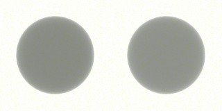
Three glass spheres: Cycles 5.2 CPU | Astroray CPU addon leg | Astroray CPU old blend_import leg (dark proxy). Verdict: the old run_parity blend_import leg is a base-colour-only diffuse proxy (issue #779), so the parity glass row was not a true glass comparison; the addon leg renders real glass (noisier than Cycles).
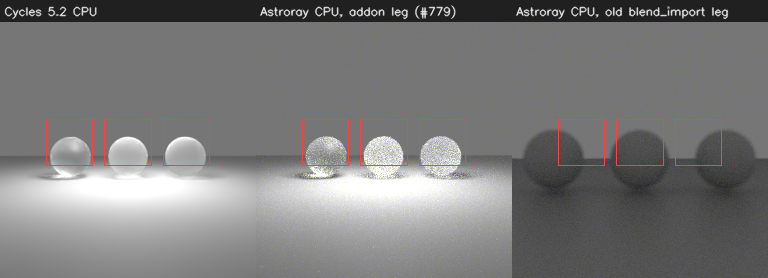
Principled BSDF alpha 0 / 0.5 / 1 on a red-tinted card above a floor: the card's shadow scales with alpha (none, half, opaque). Verdict: shadow density tracks alpha as expected (visual check).
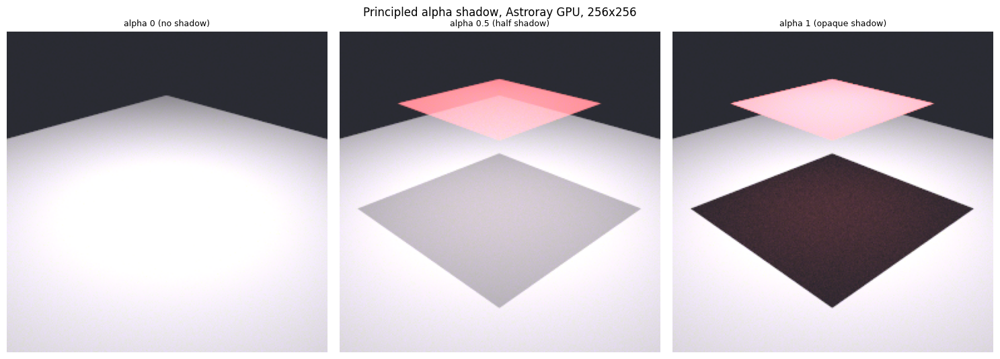
Viewport edit sequence: base, base colour red, Emission Strength 5 / 10, emission green, emission 0. Verdict: on main the GPU ignores Principled Emission (spheres go dark); after the fix it emits as an illuminant (GPU/CPU 0.994-1.003) with worker ON and OFF identical.
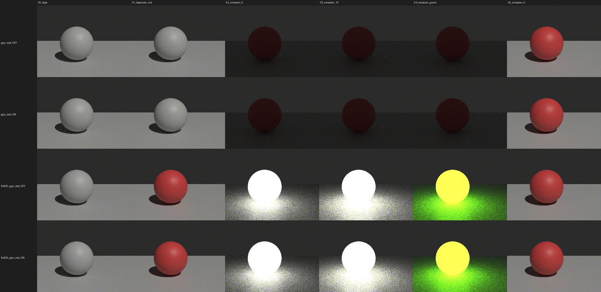
Astroray/Cycles mean ratio per ROI (centre, limb, background) at roughness 0 / 0.2 / 0.5 / 0.85. Verdict (diagnostic): background 1.00; centre 0.99 at r=0, 1.08 at r=0.5, 1.63 at r=0.85; limb 0.84 at r=0 rising to 1.13; limb/centre 1.34 vs Cycles 1.60 at r=0. Findings route to pkg124 (VNDF reflection lobe) / pkg179 phase 2.
limb_centre_chart.json · roi_ratio_chart.json
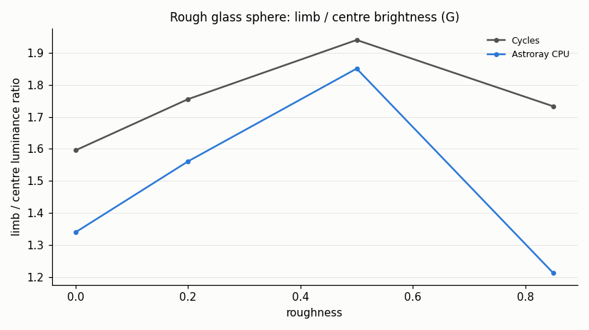
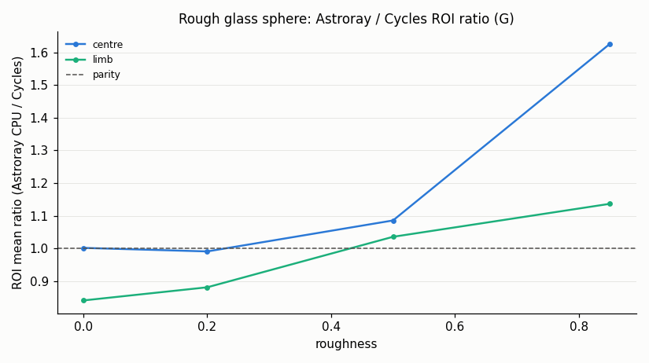
Four tile textures (checker + colour gradients) in the addon: Cycles CPU | Astroray CPU | Astroray GPU (white box = ROI). Verdict: after Batch R all three agree; main_before_sheet shows the GPU leg rendering flat grey on the first two tiles before the fix.
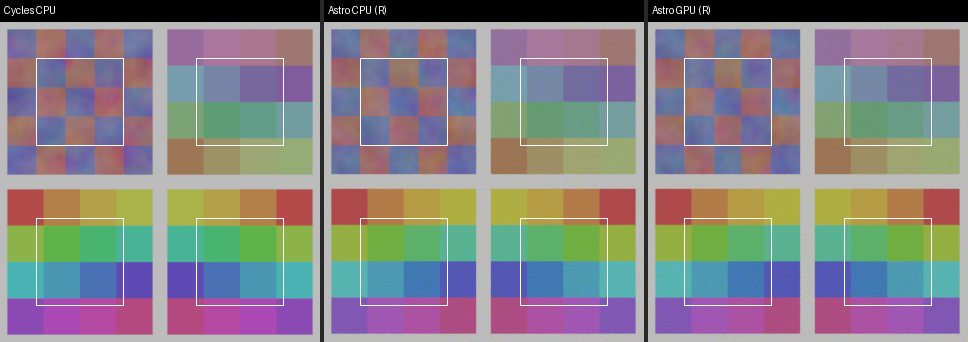
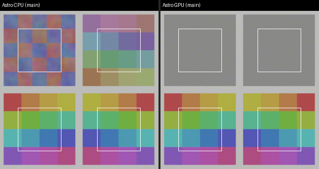
Procedural texture through Math / Mix / Color Ramp / Map Range into a BSDF socket: Cycles CPU | Astroray CPU | Astroray GPU. Verdict: all three show the marbled sphere (not flat) after the op-VM fix; open observation: the generated-coordinate Checker floor has slightly smaller / phase-shifted cells than Cycles on both Astroray backends.
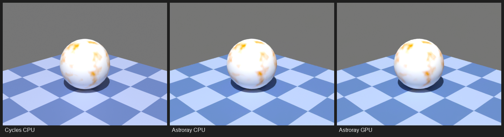
What: eight production node-tree materials (car paint, wood, marble, PBR group, shader stack, attributes, light path, curves + geometry) rendered Cycles (1024 spp) | Astroray CPU | Astroray GPU (64 spp, seed 278). Sheets `prod_*_sheet.png` draw the gate ROIs; `band_utilisation_chart.png` = worst ROI-channel deviation / MC band
band_utilisation_chart.json · production_summary.json · silent_drops.json
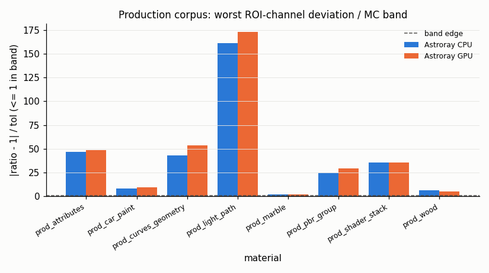
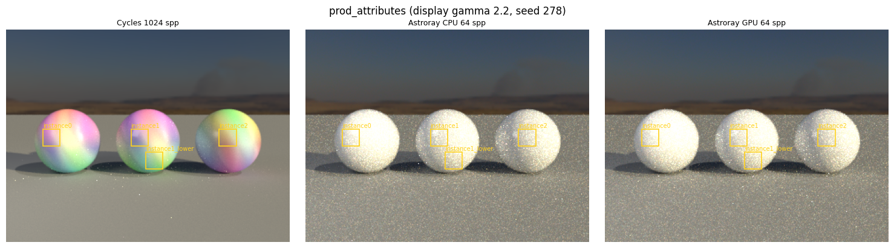
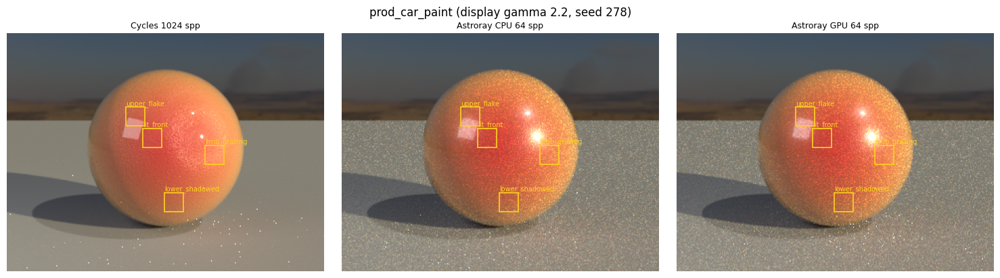
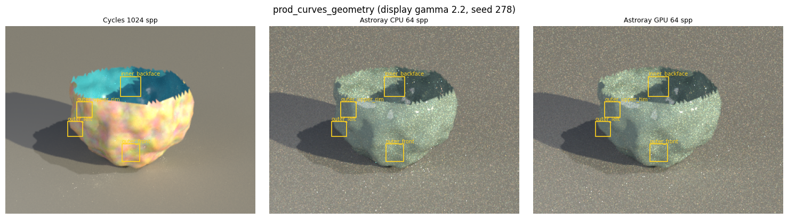
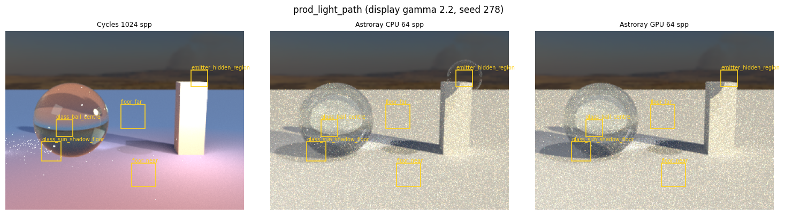
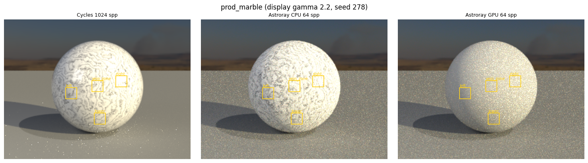
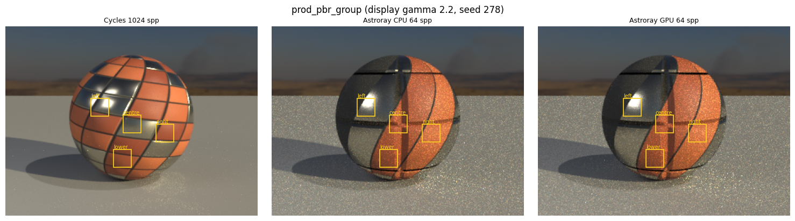
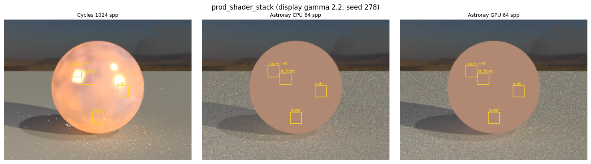
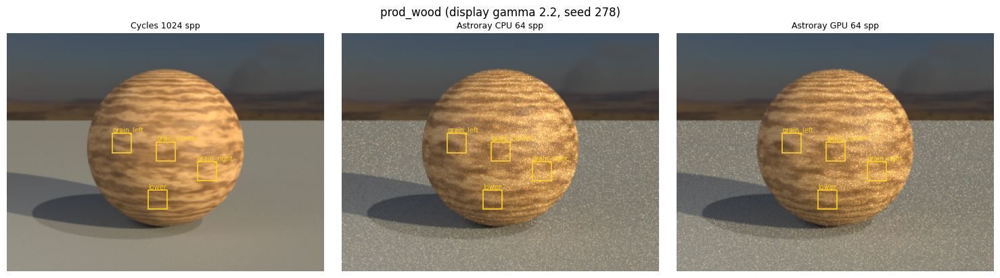
`curves_card_crop.png`: textures_mapping CurvesCard (Float / RGB / Vector Curves), Cycles | Astroray CPU | Astroray GPU. - Production corpus: 16 pass / 22 xfail / 0 XPASS; corpus v2 604 pass / 94 xfail. prod_wood CPU 4->7/16, GPU 3->7/16; curves GPU 2->3/16. - sd->N probe (Layer Weight/Fresnel read the pre-bump normal): Cycles and CPU/GPU op-VM/graph all flat 0.
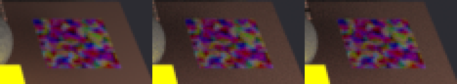
Reference (Cycles-exact) | CPU | GPU for a spot with an IES profile, before (main) and after the fix. Verdict: on main the GPU cone is flat grey and the CPU cone has a streak; after, CPU and GPU both match the reference. Provenance: pkg276 IES spot research, Batch P, 2026-09.
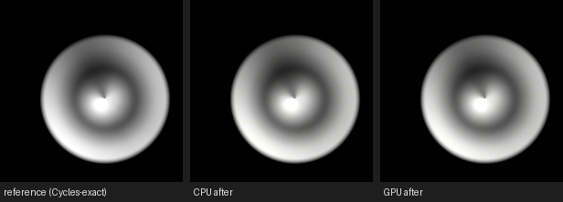
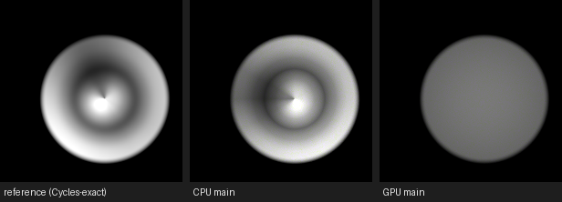
lighting_studio.blend with POINT / SUN / SPOT / AREA booths and a synthetic wall-washer IES on the spot. Verdict: INCONCLUSIVE. SUN matches (0.995); POINT 0.52, AREA 0.21, SPOT_ies 0.02 are all dim, a broad scene/measurement artifact rather than a clean IES verdict (needs a single-spot A/B).
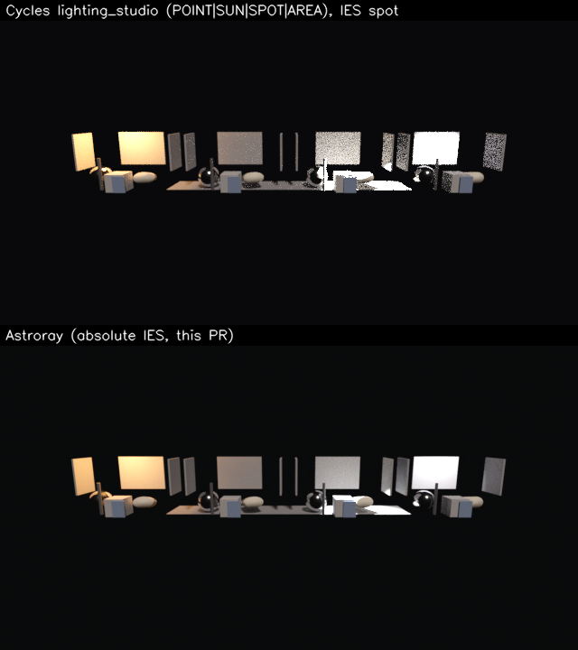
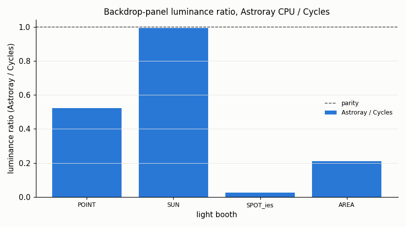
lighting_studio scene (point / sun / spot / area booths), Astroray vs Cycles, before and after the Batch P lamp changes. Verdict: Astroray reproduces the booth layout and colours; the after sheet is the current behaviour.
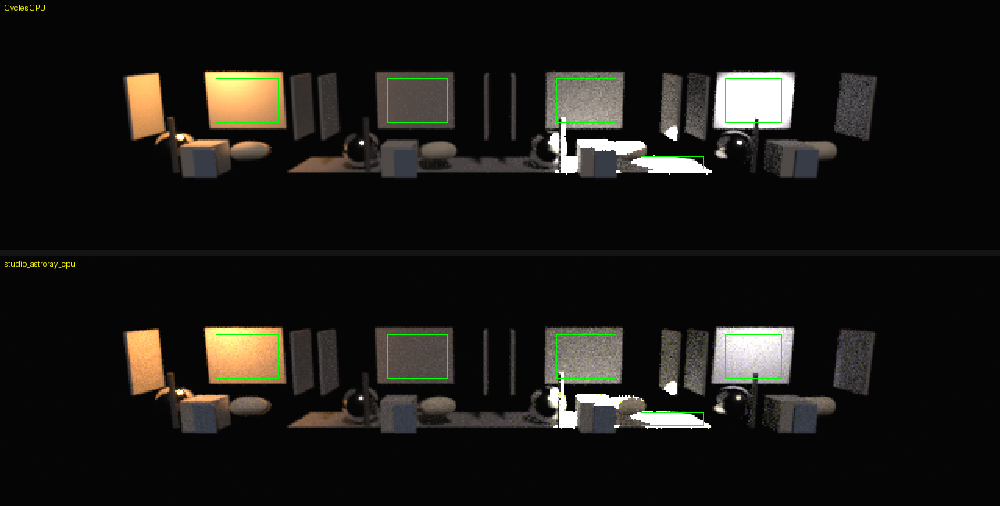
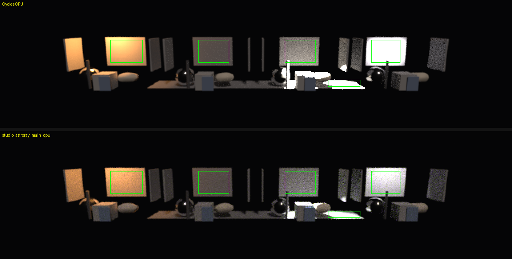
Fraction of ROI energy removed at clamp L = 1/3/10/30 for principled / absorb / scatter media, Cycles vs Astroray. Verdict: Astroray removes more energy than Cycles at L<=10 (principled L10 0.049 vs 0.000-0.005; scatter 0.204 vs 0.065-0.165); the gap is the medium-NEE site (0.183 of scatter's 0.204). The Cycles metric (sum|RGB| > 3L) removes even more.
absorb_chart.json · principled_chart.json · scatter_chart.json
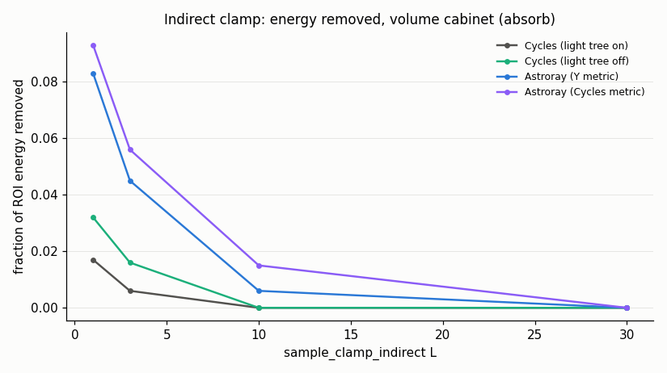
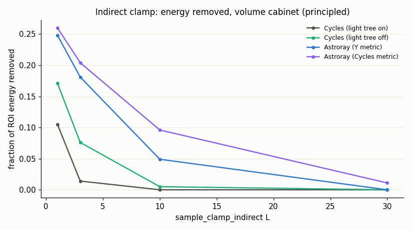
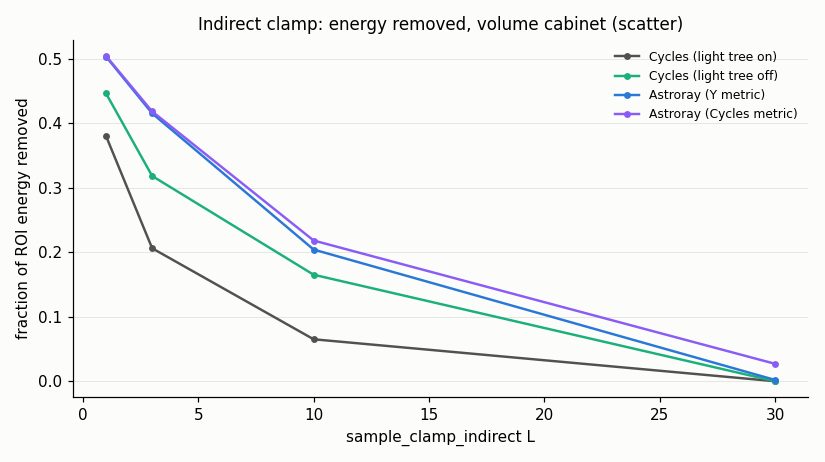
Emitter face with a red/green checker emission (left) and the floor it lights via NEE (right). Verdict: the floor is lit by the red+green mix (yellow), so textured emission reaches NEE (issue #776). Provenance: Batch E1, issue #776, 2026-09.
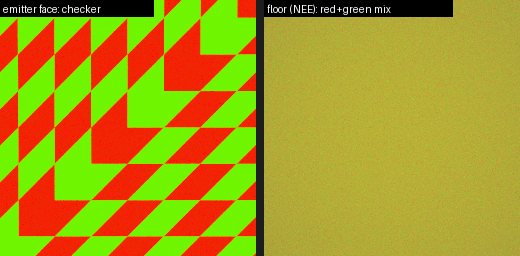
Chrome sphere reflecting an HDRI: Cycles, Astroray, and the per-pixel luminance ratio map. Verdict: lookup unchanged, no visual regression; the ratio is ~flat except the sun-glint corner (F82 was rejected; the residual is the #795 chrome G +8% spectral skew).
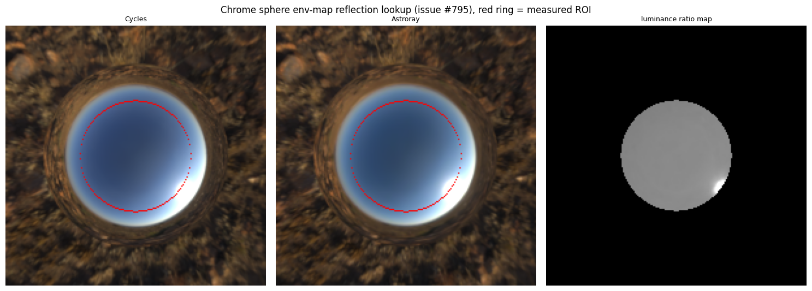
camera_cycles_old_new_sheet: Cycles MS sky + sun disc vs the old Preetham bake vs the new engine Nishita sky (e28). samescene_sheet: same-scene Cycles vs Astroray. Charts give the band luminance ratio Astroray/Cycles. Verdict: MULTIPLE_SCATTERING sits at 1.03 (60 deg) to 1.26 (10 deg upper band) of Cycles; the old PREETHAM bake was 7-15x.
band_ratio_chart.json · sky_type_drift_chart.json
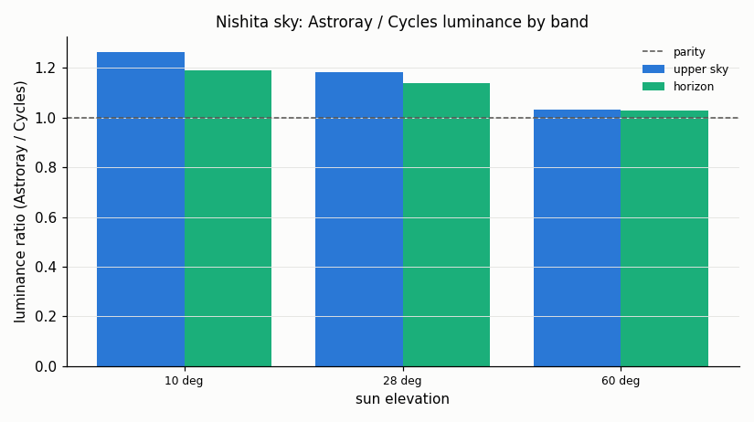
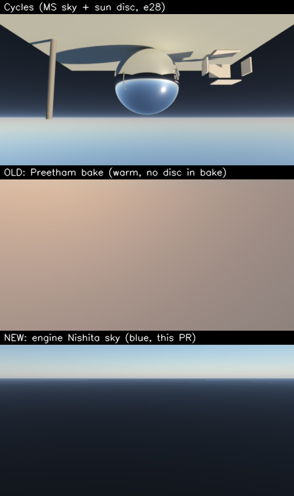
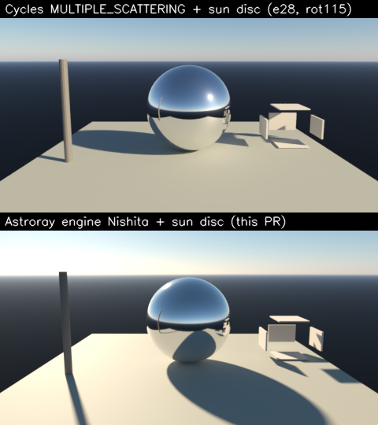
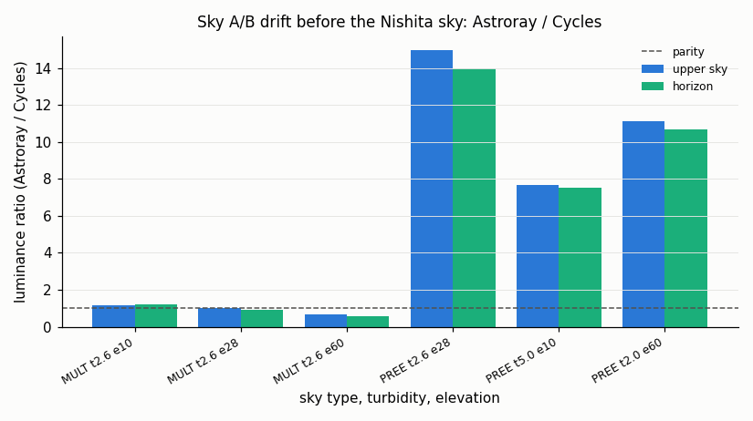
Addon sun_rotation 0 / 90 / 225: Cycles (top) vs Astroray (bottom), yellow = measured shadow azimuth. Verdict: Astroray shadows match Cycles within 4 deg at every rotation after the #814 fix (Cycles az 92/2/222 vs Astroray 88/2/222). roi_rot0_sheet shows the matched irradiance ROIs.
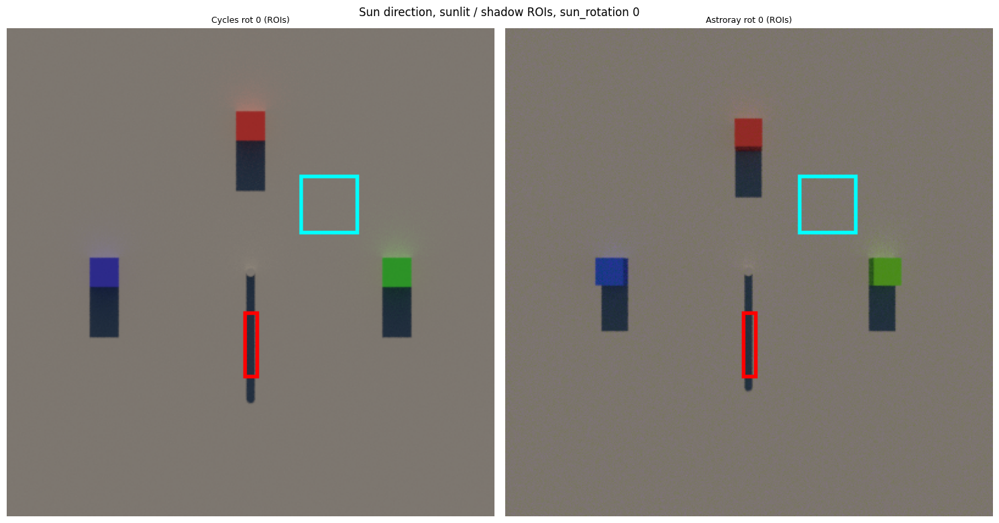
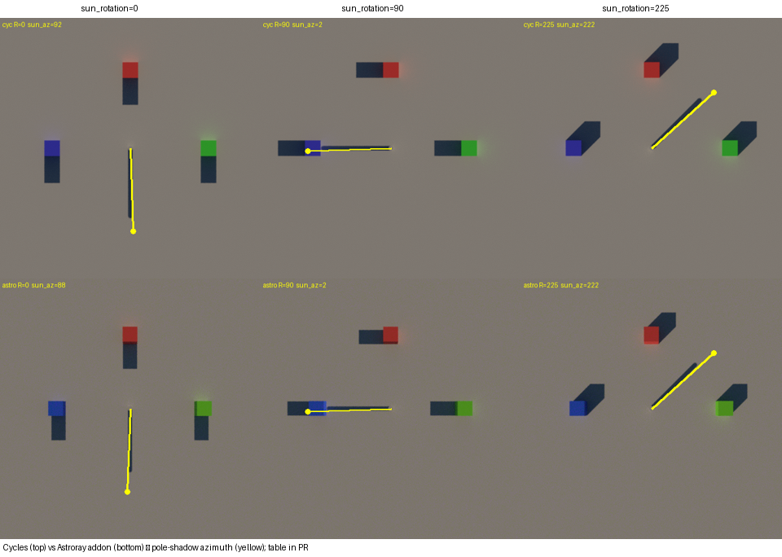
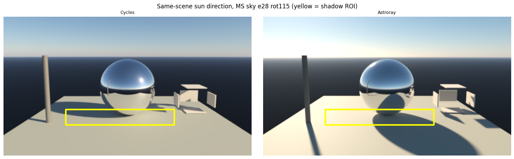
shadow_sheet: Astroray sun disc (elev 28, intensity 4). sky_sun_disc_ab_sheet: Cycles Nishita (sun disc) vs the old Astroray bake + sun disc. ground_ratio_chart: ground luminance Cycles vs Astroray. Verdict (Batch J, pre-fix): sky illumination within 4% (umbra 0.070 vs 0.067) but the sun disc was ~1.8x too
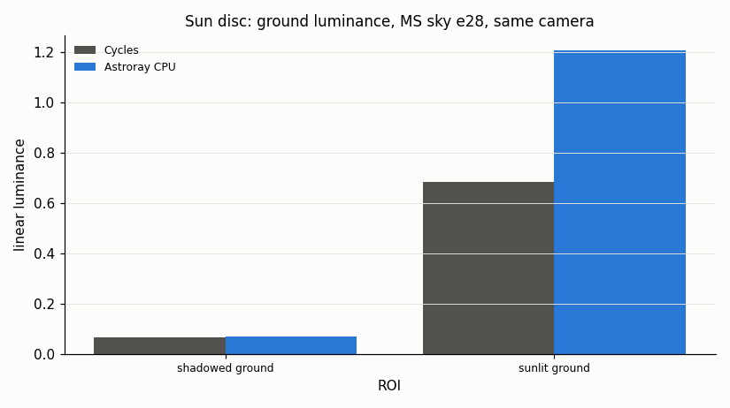
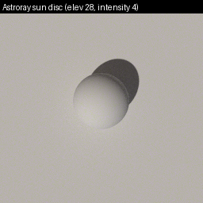
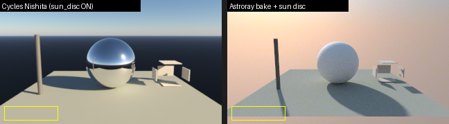
Astroray GPU 1024 spp (16.3 s, post-#837) above Cycles GPU 256 spp. Verdict: close visual match of smoke and fire shape, colour and shadow; Cycles is slightly softer. Provenance: Batch Q showcase, only new hero image of the session, 2026-09-21.
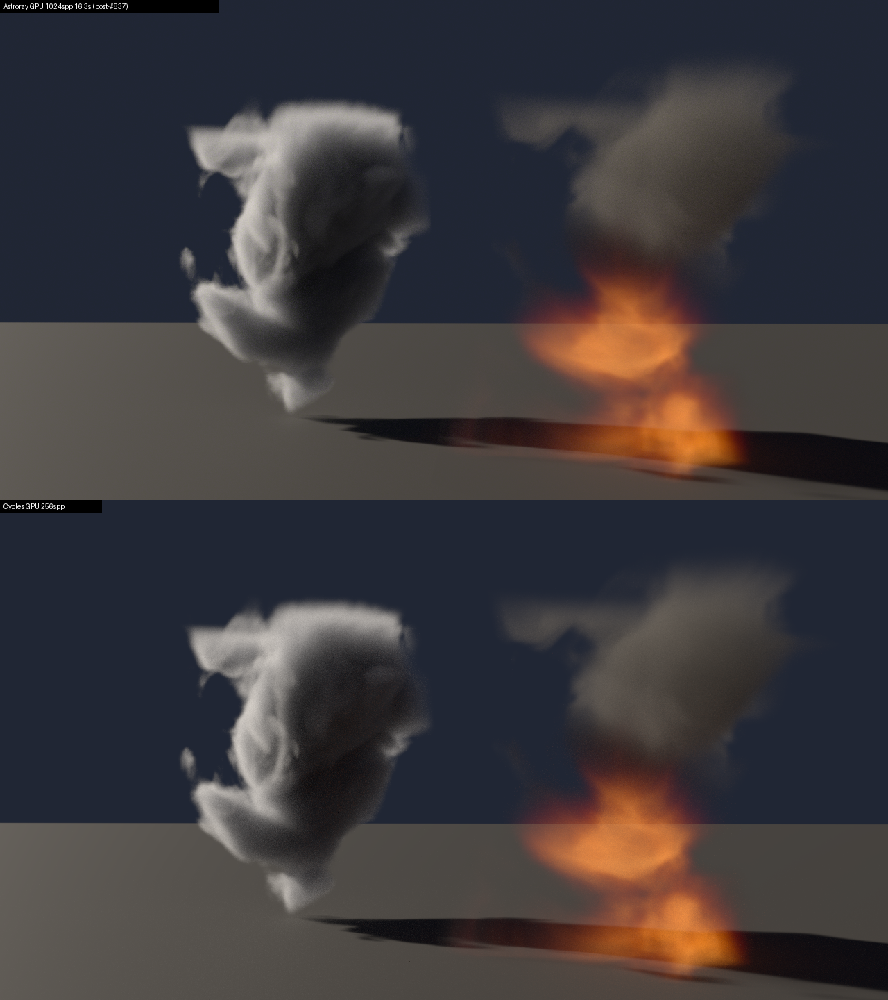
Small smoke grid volume rendered on CPU and GPU (48x48 tiles scaled up). Verdict: CPU and GPU agree in shape and brightness. Test tests/test_pkg269_gpu_hetero_parity.py now writes to test_results/_runs/ (issue #861).
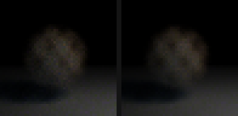
v2_media at 64 spp: Cycles CPU (1024 spp) | Astroray CPU before | CPU after | GPU after, ROIs drawn. n_x_relvar_*: N x relVar of luminance vs spp (flat = 1/N noise), shaft ROI and whole image. Verdict: the shaft now reaches Cycles' level (mean 0.19 vs 0.19) and the heavy tail is gone (N x relVar flat 22-26 vs 28-71 before);
n_x_relvar_image.json · n_x_relvar_shaft.json
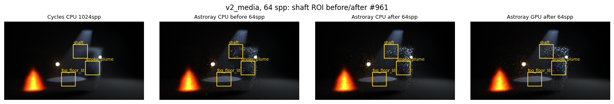
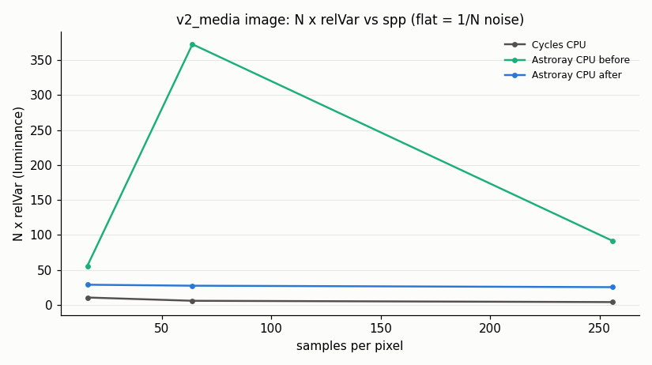
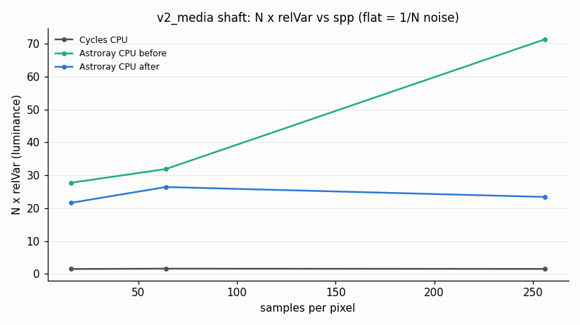
Volume cabinet: Cycles CPU (ref) | Astroray main | Astroray with spectral Planck emission; zoo_crop_after_sheet is a later re-run. Verdict: the red glowing volume under the box appears with the spectral emission path, matching the Cycles hue. Provenance: pkg270, Batch K (PR #820), 2026-09.
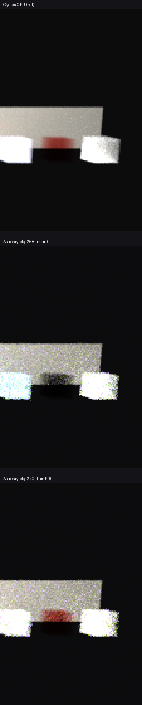
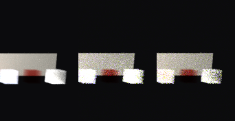
Grid volumes (blobs, blocky cloud, box, fbm cloud) and a red scattering cube against the empty backdrop. Verdict: shapes and the red tint over the backdrop are visible (the test asserts the tint, not these pixels). Test tests/test_pkg268_volume_visual.py now writes to test_results/_runs/ (issue #861).
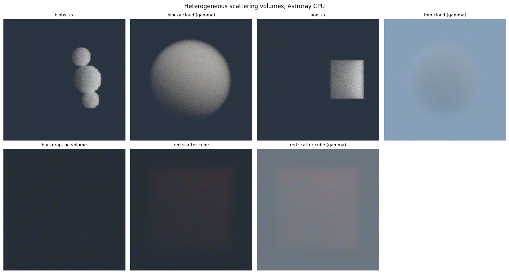
Smoke + fire showcase at volume_bounces 2, 0 (Blender default) and 64: Cycles (left) vs Astroray CPU (right); gpu_sheet has the Astroray GPU vb=2 and vb=0 legs. Verdict: Astroray follows Cycles as vb changes (vb=0 darkens the smoke); vb=64 shown at the pre-pkg271 behaviour.
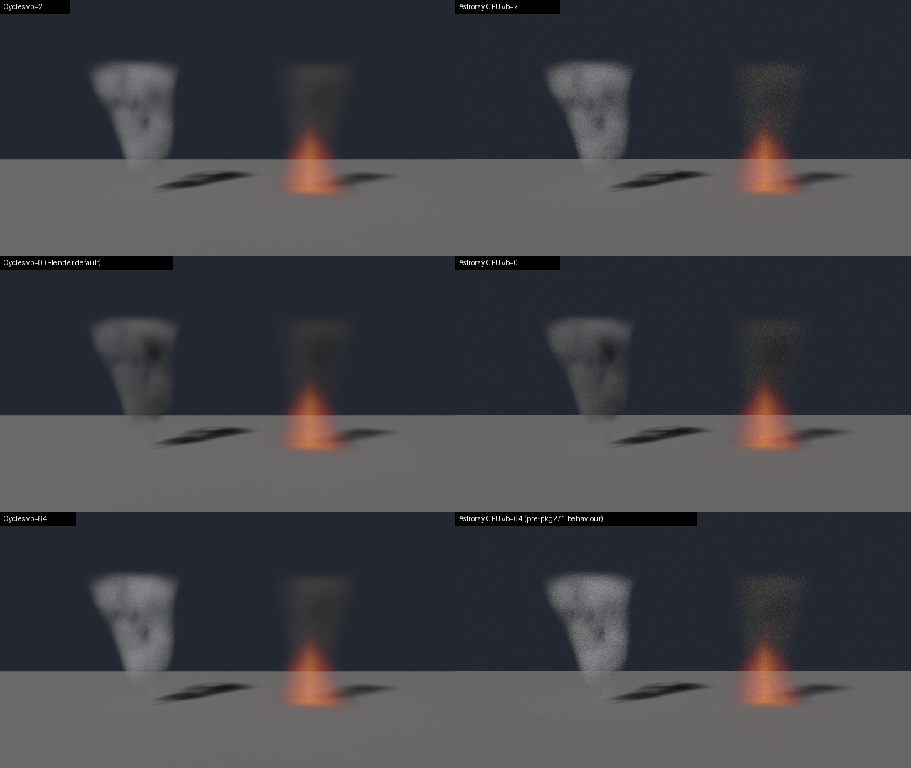
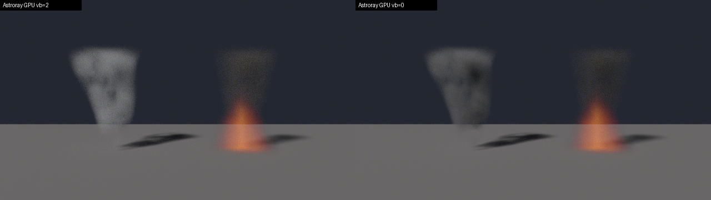
Colour tiles before / after switching the engine spectral table to the CIE 1931 2 deg observer. Verdict: the observer mismatch (1964 10 deg CMF vs 1931 sRGB matrix) caused the grey and low-chroma skew; the fix removes it (residual up to ~9% on saturated albedo is physical).
Tests: the per-pixel Sobol-Burley camera draws (pkg305) against the white-noise camera, corpus v2 on CPU and GPU at 64 spp (seeds 278-282 vs Cycles; means with independent seeds 278 + 10000 k).
chroma_variance_vs_cycles_cpu_chart.json · chroma_variance_vs_cycles_gpu_chart.json · luminance_variance_vs_cycles_cpu_chart.json · luminance_variance_vs_cycles_gpu_chart.json · roi_mean_shift_cpu_chart.json · roi_mean_shift_gpu_chart.json · sky_chroma_relvar_cpu_chart.json · sky_chroma_relvar_gpu_chart.json
`hair_tuft_before_after.png`: corpus v2 `v2_camera_geometry` (perspective, ortho) hair tuft, 3x nearest-neighbour crops. Columns: Cycles 1024 spp reference, Astroray CPU, Astroray GPU on main (bare scalp: the scene's collection instances put the flat scene under a TLAS and the GPU
Rows: Cycles CPU | Astroray CPU (light tree on) | light tree off (power) | practical bulb removed; 32 spp, seed 11. Verdict: the CPU light tree owns the variance gap; the GPU falls back to the power CDF and already matches (follow-up issue #851).
Tests: equal-spp and equal-time (2/10/60 s per 1280x720 frame) relMSE, relVar, chroma, tail share, N x relVar slope and efficiency 1/(relMSE x t); Astroray CPU/GPU vs Cycles CPU/OptiX, 8 scenes, 5 seeds, render-only time by spp differencing. Settings: `blur_glossy = 0`, `sample_clamp_indirect = 0` (authored, not Blender defaults), adaptive/denoise off.
efficiency_ratio_chart.json · efficiency_table.csv · noise_anatomy_chart.json · relmse_vs_time_chart.json
Tests: prism under a 4 degree sun (dispersive caustic), chromatic homogeneous medium, narrow-band (sodium) lamp on a coloured wall; Cycles, Astroray CPU/GPU and Mitsuba 3.9.1 `cuda_ad_spectral` (16384 spp reference; sun in physical units, rectangle lamps anchored per scene). Verdict: medium agrees 1-4 % (Cycles up to 20 % off in blue); narrow band R/G agrees after #1020 (R within 3 sigma, G -0.3 %,
arbitration_roi_means.json · efficiency_ratio_chart.json · efficiency_table.csv · noise_anatomy_chart.json · relmse_vs_time_chart.json
Continuous Base Color edit storm on the metal_sweep and big scenes; shaded band = the 33 ms tick-gap budget. Before: ~100% of commit cost was a full sync_viewport_scene (112-120 ms x 46-50 per storm) because every edit classified as fallback. After: edits dispatch as MATERIALS (replay True 97 / 85), full syncs drop to 2.
Edit dispatch to first correct Blender-presented frame, GPU, 2100x1221 region, 10k and 100k triangle grids, camera (view_orbit) / material / object-move edits, 300 events per cell, 0 chain errors, 0 stale frames. latency_chart: p95 per cell, worker ON vs worker OFF (synchronous); dashed line = gate (a) p95 100 ms.
Nine edits on a Principled sphere (base colour, roughness, node link, image swap, emission): worker_on_sheet and worker_off_sheet (downscaled viewport screenshots); centre_rgb_chart plots the centre pixel per step. Verdict: PASS. ON and OFF match within ~1% on every edit, so the incremental-replay fix (#721) adds no staleness.
Sphere on a floor: material edits (base colour red, emission 5/10, green, 0) and object edits (move sphere, light x4), worker ON and OFF, before (pre) and after (post) the fix. Each sheet: rows pre OFF / pre ON / post OFF / post ON. Verdict: before, base colour / move / light edits were not reflected (stale frames); after, all steps update on
Frames captured before, during and after a region-view orbit on the big and metal_sweep scenes. Verdict: with the worker ON the view keeps presenting during the orbit and hands off to the final full-res frame (final_full = True); details in worker-tick-gap.
This change compared with main on an RTX 5070 Ti and a 7800X3D (OMP 8), 2026-09-30. Each chart uses alternating rounds with burn-in, minimum of the warm calls. Harness: `benchmarks/wavefront_baseline.py --cornell-pair`.
bvh_build_chart.json · pool_throughput_chart.json · render_time_chart.json · repeat_render_chart.json
Repeat `render()` of an unchanged scene, 16x16, 1 spp, RTX 5070 Ti, min of 6 warm calls after one cold call. Harness: `benchmarks/wavefront_baseline.py --cornell-pair --devices gpu --skip-full --calls 7`. - `repeat_render_chart.png`: heavy 2M-triangle Cornell 0.886 s -> 0.004 s; 12-triangle scene 0.004 s unchanged.
cornell_pair_wall.json · pair_optix.json · pair_software.json · profile_heavy_optix.json · profile_heavy_software.json
REG / STACK per template instantiation of the op-VM shade kernel. Verdict: no change. All 64 instantiations stay at REG 254 with identical stack (4512-8736 bytes); the only new symbol is gpu_progInputTexel.
- `pareto.png` / `pareto.json`: fresh build time against Cornell-pair render speedup for each configuration tried. The dashed line is the 1.3x build cap; the dotted line is the 1.8x target. - `speedup.png` / `speedup.json`: shipped build (8172ffa5) against main, min of 5 interleaved.
cuobjdump resource usage, main vs the fix: only kernels that call gpu_material_emitted changed. Verdict: the REG:254 stageShadeBucketedKernel is untouched (128/128 instantiations identical); the 14 changed kernels move by at most +7 registers and -32 stack bytes.
registers_chart.json · stack_chart.json
Tests: render time of v2_light_tree with the Sobol-Burley camera group vs the white-noise camera; min of 3 after a burn-in, two interleaved rounds. CPU 16 spp (OpenMP-off addon build), GPU 256 spp (RTX 5070 Ti).
light_tree_render_time_cpu_chart.json · light_tree_render_time_gpu_chart.json
Per-area, per-file and per-test pytest junit durations, before (serial `pytest tests`) vs after (`run_split.py`). After-series CPU-pass times are divided by the 4 xdist workers, so bars are wall-equivalent seconds. Before: serial, 45.2 min wall (2711 s), 4587 cases. After, full profile (`run_split.py`): 23.8 min wall (CPU pass 451 s + GPU pass 977 s); every test still runs.
fast_by_area_chart.json · fast_by_file_chart.json · fast_top_tests_chart.json · full_by_area_chart.json · full_by_file_chart.json · full_top_tests_chart.json
27 rows over 5 stages: 12 PASS, 10 HONEST-FAIL, 3 NEEDS-VISUAL, 2 LIMITATION (viewport-only controls). Verdict: bounces, exposure, seed, samples, sample_clamp_direct and filter width are honoured; HONEST-FAIL rows (diffuse/transparent/volume bounces, blur_glossy, film_transparent, render_region, caustics flags, pixel filter type)